Про головні принципи сучасної моди та про те, кого слухати, а кого ні
Оскільки блог Vandastyle досяг солідного трирічного віку і в ньому набралося вже досить багато статей, я вирішила зібрати в одному пості найкорисніші та найактуальніші (те, що не змінилося за минулі три роки і навряд чи зміниться за наступні).
Улюблені читачки пишуть, що тільки завдяки блогу, навіть не звертаючись до мене за консультаціями, стали виглядати набагато краще.
Але почати таки треба з неправильних спідниць, негарних суконь і поєднань, що вийшли з моди. Так що якщо ви не читали блог із самого початку, або хочете освіжити пам'ять, якщо вам набридло вивчення статей про моду заради проведення часу, хочеться справжніх змін, видимих у дзеркалі та відмічених близькими, то ось добірка, яка допоможе розпочати прямо зараз. І, звичайно, це чудовий спосіб дізнатися, по-перше, що представляє собою сучасна мода, і, по-друге, що буде в моді найближчим часом (підуть побоювання купити річ, яка скоро вийде в тираж).
Як влаштована мода, чому одні речі ми носимо десятиліттями, а інші не коштують навіть покупки (якщо бюджет обмежений і речі купуються за принципом спочатку функціональності, а потім задоволення)
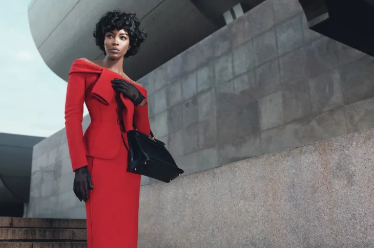Уфф. Після написання цієї статті я почуваюся буквально Олександром Васильєвим, істориком моди. Але, здається, ніде так гостро не відчувається недолік теоретичного базису, як у мінливій та примхливій області fashion. Наводимо порядок у думках і розуміємо, чому можна не носити oversize, але не можна поєднувати в одному образі речі одного єдиного стилю. І так, ви зможете аргументовано пояснити подружці, чому вам не подобаються її туфлі на прихованій платформі. Також є шанси переконати її, що ви дійсно не із заздрощів радите їй зняти бандажне плаття (і більше ніколи не одягати).
Моя бабуся любила говорити, що краще бути на крок за модою, ніж на крок попереду. Воно, звісно, звучить. Але, як і в абсолютній більшості яскравих фраз із категорії «думки мудрих людей», форсу в ній багато, а правди майже нуль. Перш ніж визначати, де ж краще бути (позаду чи попереду), добре б дізнатися, що мода - це не якась монолітна брила,що рухається вперед а, по-перше, чітко окреслена в просторі, а по-друге, тисне всіх, хто не втік за обрій або не відступив розсудливо і смиренно назад, у хвіст, у зроблену їй глибоку колію.
На мій погляд, у моді можна виділити як мінімум три великі пласти. Або три хвилі. Велика хвиля може тривати до десяти років (і навіть більше) і, строго кажучи, її можна назвати актуальністю. Не стежити за актуальністю та виглядати добре неможливо. Ось тут точно не можна опинитися позаду моди. Інакше ризикуєте виявити себе в компанії рясно нафарбованих тіточок з пересолярним глибоким декольте, упакованим у атлас, що поблискує.
Вже давно актуальні і поки що не збираються здаватися такі довгострокові тенденції:
ОЗвідси випливають «нові» правила:
Звідси найпотужніша тенденція до однакових моделей для чоловіків і жінок: вчорашні основи мужності та жіночності, такі як спідниця та сорочка, сьогодні стають унісекс. Саме через цю хвилю нам постійно радять не переборщувати із зайвим старанням та ошатністю. Жінка, що актуально виглядає, не веде виснажливий бій за свій зовнішній вигляд. Адже вона має й інші заняття. Подумайте тільки, за часів «Великого Голівуду» та Грейс Келлі жінка в Америці та більшості країн Європи не могла відкрити рахунок у банку без письмового дозволу чоловіка! Тобто можете уявити, для яких жінок і за яких обставин творили Крістіан Діор та Юбер Жіванші. А ви кажете, забули про жіночність. Про жіночність не забули, забули про безпорадність у світі чоловіків, де тільки зовнішність, яка вселяє бажання фізичного володіння, — єдина зброя жінки.
Як влаштовані рубрики «тренди» у журналах і чому їм краще не довіряти
Я ось подумала: не може такого бути, щоб тільки модні журнали були винні в тому, що, дотримуючись їхніх порад, неможливо навчитися добре і сучасно одягатися. Не може бути, щоб рупор, покликаний доносити останні модні тенденції до зацікавлених мас, настільки послідовно (і, мабуть, зловмисно — інакше як пояснити такий результат?) спотворював інформацію. Напевно, ми, як читачки, теж робимо якісь помилки в процесі сприйняття інформації. Варто про це трохи поміркувати, і виявляється, що так і читачки не без гріха.
Ось як читаємо журнал? Купуємо його, наприклад, в обідню перерву. Приходимо зі стаканчиком латте назад в офіс, кидаємо журнал на стіл, себе на стілець, витягуємо ноги і розриваємо целофанову обгортку: «Ну хоч п'ять хвилин перепочити, подивитися, у що люди одягаються, поки я тут, як проклята, крім роботи і ходити нікуди ». Гортаємо, бачимо розділ «Тенденції». Так-так, що треба докупити? Чим поповнити гардероб? А ось, будь ласка. Леопард, хутро, шкіра, денім, спідниці, брючні костюми, мілітарі. Колір сезону: синій. Часу вчитуватися немає, картинок у друкованій версії не так вже й багато (треба треба ще й розділ «Психологія» впхнути, і «Світське життя», і «Гороскоп»). Журнал перекочовує до колеги чи в дальній кут столу. Наступного разу ми згадуємо тенденції, коли займаємося шопінгом. В онлайн або традиційному рітейлі — неважливо. Головне, що ми запам'ятали: хутро, шкіра, мілітарі, синій. Ось ця куртка — якась дивна, ця — незрозуміло що, а ця — чудова, знайомий силует, мені піде, кілька років носила таку — чудова була. Шкіряна, синя. Ну от, одягнулась згідно з тенденціями. А решту в шафі знайду. Шуба в мене є (пам'ятаємо про хутро в тренді).
Напевно, ви вже зрозуміли, що цей спосіб дій інакше, як великою помилкою, не назвеш. Головне у тенденціях сезону – це не назви предметів одягу, не назва матеріалу. Тенденції щороку однакові. Як сюжети у світовій літературі. Скільки їх там? 14, здається? Скільки я пам'ятаю, тенденції це мілітарі, мінімалізм, хутро, чоловічий костюм, вікторіанська епоха, денім. Ну і ігрища з квітами, на які я пропоную просто не звертати уваги. Весь час у тренді пудрові відтінки та синій. Синій і пудру. Пудра та синій.
Головне, на що потрібно дивитися, це силует і поєднання предметів одягу. Вони є те, що змінюється. І те, чому небезпечно одягатись виключно на розпродажах. І те, чому одні старі речі стають вінтажними модними знахідками, а інші не потраплять далі за горище у бабусі на дачі.
Цієї осені ви побачите, що в трендіоксамит . Так ось, це не означає, що можна купити (знайти в шафі) абсолютно будь-яку оксамитову річ і виглядати модно. Набагато важливіше, що оксамитовими будуть костюми та сукні в піжамному стилі, прямі сукні, що не стягують фігуру, оверсайз бомбери та всілякі пальта, включаючи кімоно (ох, це окремий, найкрасивіший тренд)
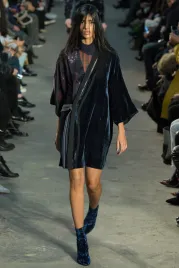 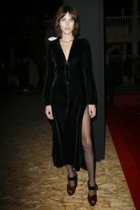Чи можна купити ці речі з іншого якісного матеріалу та бути у тренді? Звісно так. (До речі, пам'ятаємо, що і оксамит має бути якісним, без дешевого блиску та не тонким). Чи можна купити таку оксамитову річ і претендувати на стиль? Звичайно, ні.
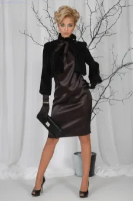Чому перемогла «молодіжна мода»
Така, ,блін, вічна молодість
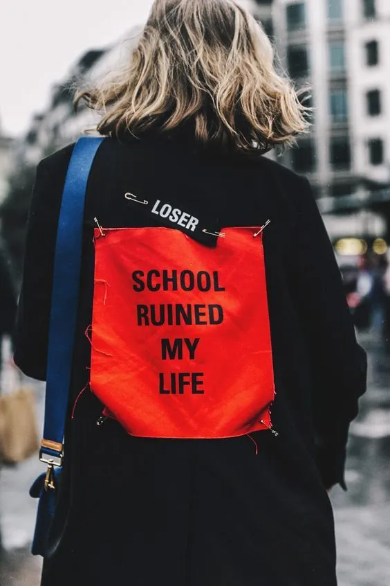Так співпало, що спочатку я переглянула лекцію про моду та кіно, потім рекомендований у лекції фільм (у російському перекладі називається «Я, Крістіана») про дуже юних берлінських наркоманів 1970-х років, і відразу після фільму відкрила спецвипуск Art in Vogue (він зараз у продажу, дуже рекомендую). Здавалося б де тут зв'язок. А вона опинилася в наявності, та ще й як.
У лекції говорилося, що фільм досі має величезний вплив на моду, наприклад, у такій стилістиці знято як мінімум одну рекламну кампанію Gucci (це не кажучи вже про блискучі бомбери, які, звичайно, не HM разом із Zara винайшли).
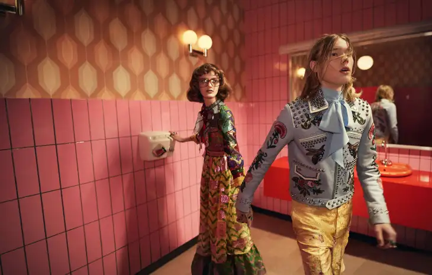Але я дивилася не на бомбери і розкльошені штани (70-ті). Кілька разів 14-річна героїня переобувалась для походу на дискотеку наступним чином: знімала кросівки, а на теплі смугасті шкарпетки (найпростіші, можна сказати, дитячі) одягала позичені у мами туфлі. Туфлі не відрізнялися особливою красою, шкарпетки тим паче. Все разом виглядало дикувато.
І я все думала, як цікаво виходить. Дівчинка думає не про те, щоб точно повторити дорослий образ (чим дуже грішила в юні роки я і тисячі школярок, не включених в жодну підліткову субкультуру, які хочеш чи ні, а формують якусь естетику). Ми лише хотіли скоріше почати подобатися хлопчикам і бути схожим на екранних фатальних красунь, тому копіювали умовний образ дорослої сексуальної жінки, яким він був у Росії в 90-ті: міні-спідниця, блузка, можна жакет, якщо він довший за спідницю – чудово, взуття на підборах, блискучі колготки, «поставлена» чубчик, коричневі тіні (поки завуч не вивів із класу і не змусив вмиватися)
Чому до «весняних трендів» варто ставитися прохолодно
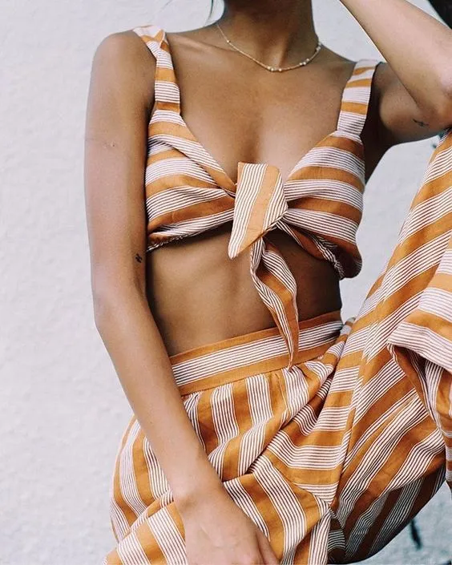Тяжко писати про те, чого немає. Уявіть собі статтю «Як зібрати букет волошок в Антарктиці». Або «Як громадянське суспільство у Росії відстоює виборчі права». Або «Підприємці в епоху Радянського Союзу». Ні, за великого бажання слова і навіть сенси підібрати можна. Описувати окремі прояви, що дуже приблизно підходять під терміни, задані заголовком. Навіть, мабуть, робити якісь висновки. Читач не повинен втрачати на увазі головне: в Антарктиці букет зібрати теоретично можливо, але скоріше з мохів і лишайників, в Росії суспільство вкрай неохоче і нечисленно щось відстоює, підприємців у період між НЕПом і Перебудовою не було, були окремі особи, яких спрага грошей або пригод призводила до реалізації схем, що кримінально караються, отримання доходу. Фірмовий довгий зачин написано ура. Переходимо до моди. Всі вже здогадалися, що мова йтиме про те, що на весняно-літні тенденції слід звертати мінімальну увагу. Незважаючи на те, що виходять повноцінні колекції, речі надходять до магазинів, а модні медіа невтомно пишуть статті про тренди нового сезону.
Згадаймо, про які тренди писали минулого літа? А позаминулим? А рік тому? А десять? Гарантую, що ви не помилитеся жодного разу, назвавши: смужку, білий колір, квітковий принт, солом'яний капелюх, джинсову тканину в різних проявах. Щоразу всі ці "новинки" подаються з великим ентузіазмом, лише іноді розбавленим невеликою припискою "знову" або "back again". Але моду 2001 досить легко відрізнити від року 2010, правда? І літо 2010 явно виділятиметься на тлі літа 2018. Щоправда. Але вони відрізнятимуться не тим, що прийнято включати до списків трендів. Чи не квітковим принтом і горизонтальною (вертикальною, діагональною) смужкою. Відмінність буде у фасонах. І навіть, мабуть, лише у них. Другий критерій, що дуже впливає на зовнішній вигляд речі - це фактура, але літні фактури вкрай консервативні. Бавовна, шовк, льон. Не заглиблюватимуся у види тканин, ідея зрозуміла: все легке, дихаюче, природне (оскільки досить незручно ходити теплим літом у пластикових чоботях чи лаковому плащі, то всі ігрища з новими фактурами неминуче відкладаються до осені, а нам напишуть що «цього літа» стиль «сафарі» та одяг, «придатний для прогулянок на яхті»).
Так що всі актуальні літні фасони можна подивитися в моїй статті про осінні фасони . Не помилитеся.
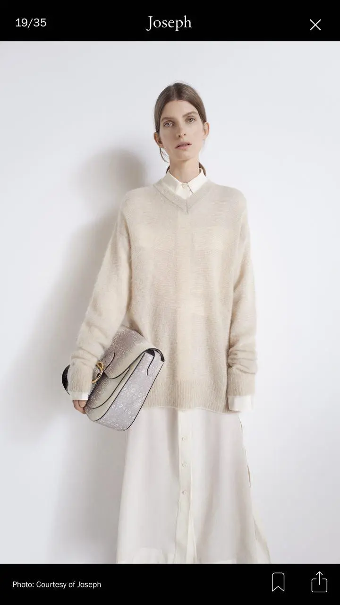 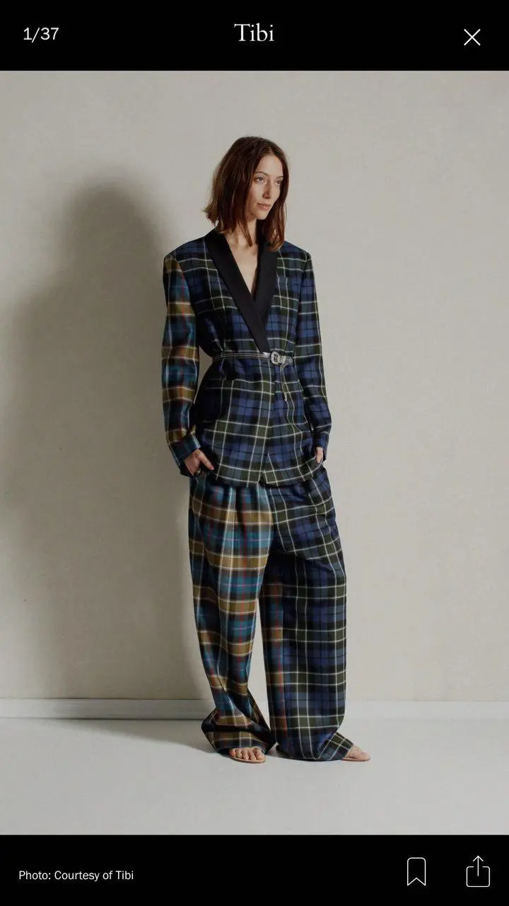 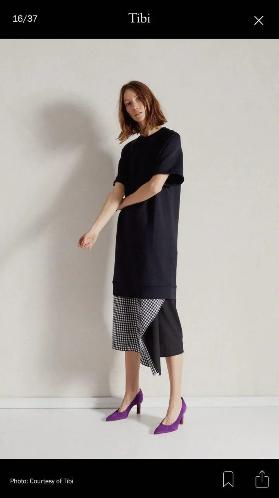Чому «добре одягнена людина» це тепер однаково що «дорого одягнена людина» раніше
Добре - це нове дорого
Піддамся магії нехитрих заголовків. "Помаранчевий - новий чорний", "брюки - нова сукня", "Zara - новий Dior". Останнє смішно, а ви спробуйте відрізнити свіжі рекламні кампанії: це визнана проблема індустрії, причому вона полягає не в тому, що Zara безсоромно копіює дизайнерські речі, а в тому, що модні топові будинки не можуть уявити нічого, що радикально відрізнялося б від Zara, і при цьому успішно продавалося не тільки літнім багатим леді, які в молодості знали найбільшого мосьє.
Zara FW 2017-2018 Campaign:
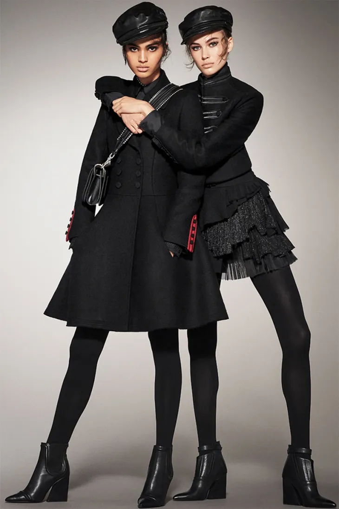Ну, як, знайшли 10 відмінностей? Ходімо далі. Зображення в заголовку і малюнок нижче - це it-girls з онлайн-журналу H&M, одягнені, відповідно, в H&M:
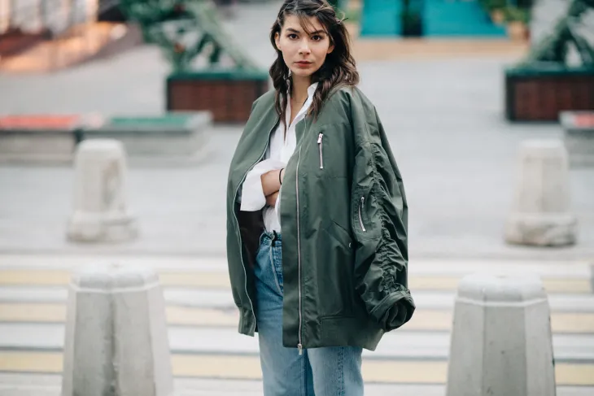Дівчата одягнені чудово. І ніяк не можна сказати, що одягнені дешево (хоча так і є).
Ми звикли погоджуватися, що якщо брати середню температуру по лікарні, то, безумовно, дорожчий гардероб має більше шансів виглядати сучасно і круто, ніж менш дорогий. Але тут ми потрапляємо в кілька пасток, які в результаті, замість вірних оптимістичних висновків, заводять нас у помилки та зневіру. Правила «чи чорне, чи біле, чи ніяк» у житті майже ніколи не працюють. Або принц чи алкоголік. Або жебрака — чи королева Англії. Щаслива баба чи директор підприємства. Вибирай із цих двох, третього не дано. Чи треба говорити, що вся ця діалектика гарна лише для надривних пісень, призначених для виконання нетверезими слізливими голосами далеко за північ. У житті якраз дано не лише третє, а ще й четверте, восьме, і навіть п'яте з половиною. Має значення не середня температура по лікарні, а індивідуальні нюанси та деталі.